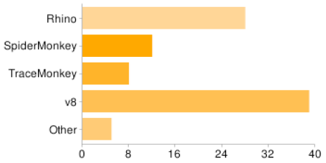
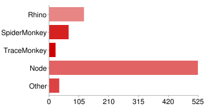

世界のJavaScript情報を読もう
過去と現在のJavaScript
自己紹介
- Name : Azu(アズ)
- Twitter : @ azu_re
- Website: http://efcl.info /
- Mail : info ＠ efcl.info
- 名刺あるよ!
- JavaScript, Greasemonkey, NILScript,Firefox, software sommelier

JavaScriptは変化が早い -スクリプト実行環境の例-


Via DailyJS Server-Side/Desktop Scripting - What is your preferred interpreter?
たった一年で大きな変化が
起きるのが今のWeb
変化とは?
- 去年は無かった項目が増えている(Node.js)
- Server-Side JSの躍進
- さらに最近になって…
- Interpreter/compiler環境の変化
- → Mug (マグ)といった新しい実行環境
- → CoffeeScript の流行
Webでは10年前の知識で語るより10年間の知識で語った方が有効
変化に置き去りにされない
Web標準の進化はゆっくりであるべきだが、Web開発の進化は激しい
全ての事を知る必要はない
しかし、知るべき事は知っておく
未来は一部の人にしか分からない→現在を知ろう
過去と現在のJavaScript
過去の JavaScript は現在の JavaScript と違う
Q&Aサイトで例えるならば
OKWave → 過去
Quora → 現在
??? → 未来
現在を知るためには…
- 現実的な問題
- JavaScript情報が溢れすぎ
- 古い情報が混じっている
- jQuery語がじわじわと
- ごちゃごちゃしてる中から見つける必要性
JSMentor
- http://jsmentors.com/
- ECMAやJSについて議論する場所
- JavaScript + Mentors（先生）
- Nicholas C. Zakas(High Performance JavaScript)
- Juriy "kangax" Zaytsev( Perfection kills )
- David Flanagan(サイ本)
- Etc…
ソーシャルサービスを利用
- はてなブックマーク
- お気に入りユーザーの利用
- id:vantguarde
- Del.icio.us
- 世界とつながるSBM
スライドは見せることを意識して作られるためよい情報となることが多い
いろいろなサービス
SlideShare – スライド
Reddit – news+SBM
Quora – Q&A
coder.io – アグリゲート
dzone.com – アグリゲート
効率的にJavaScript情報を取得できる!!→日本にも欲しい
JavaScript情報配信サイト

世界中言語問わずJavaScriptの情報を紹介してサイト
JSer.infoを立ち上げました
世界中言語問わずJavaScriptの情報を紹介
リンクと数行の説明文
Tumblrで運用
目標はJavaScriptの情報を”紹介する”ではなく”知ってもらう”事
JSer.info立ち上げの背景
- JavaScriptの情報が溢れすぎ
- 自分の周りだけの情報で全てと錯覚?
- 整理した情報を配信
- Tumblrは共同編集も可能
- 継続が当面の目標
関連記事とサイト
- 海外のJavaScript情報を見つけよう
- 今からRSS購読すべきタグと検索結果
- Tumblrをブログとして使うためにやるべき事
- JSer.info
END….
ご静聴ありがとうございました。
元々行っていた行為を拡張している
JSer.info
- 主な情報源
- RSS(いろいろなサービスの集約), Twitter
- 記事作成
- Tomblooでテンプレートのリンクを作っていく
- Tumblrな理由
- お金がない、サーバー高い、Tumblrの可能性
Tumblrノウハウ
- 費用
- 独自ドメイン代 50円
- Autopagerize対応
- サイト内全文検索
- Trunk.ly を利用
プレゼン関係
- 効果的なプレゼンテーション ー スライド作成キーポイント | をぢの 日記
- 目標:JSer.infoというサイトを知ってもらう
- 伝わるデザイン｜研究発表の ユニバーサルデザイン
- 見ただけ
- 作成中にPowerPoint落ちまくる
- プライスレス